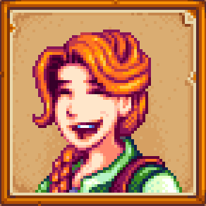

Characters
Villagers are characters in Stardew Valley. They are citizens who live in and around Pelican Town.
- singles
- Non-marriage candidates
- Non-giftable NPCs

Animals
Animals fulfill several roles on the farm. Some are wildlife, which cannot be interacted with.
- Pets
- Coop Animals
- Barn Animals

Seasons
There are four Seasons in Stardew Valley: Spring, Summer, Fall, Winter. Each Season lasts 28 days.
- Your firts day it is Spring.
- Each season has 2-4 festivals.
- Years are tied to a few events.

The Cave
The Farm Cave is an underground location accessed through a passage near the northern edge of The Farm.
- Initially, it is just a empty cave.
- Fruit bats.
- Mushrooms.